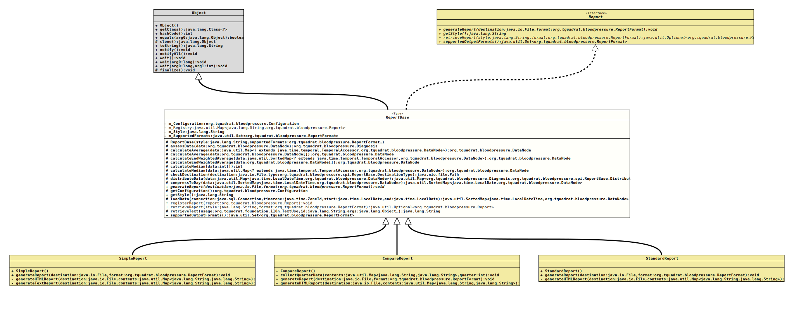

java.lang.Object
org.tquadrat.bloodpressure.spi.ReportBase
- All Implemented Interfaces:
Report
- Direct Known Subclasses:
SimpleReport
@ClassVersion(sourceVersion="$Id: ReportBase.java 126 2022-02-19 21:13:35Z tquadrat $")
@API(status=STABLE,
since="0.0.1")
public abstract non-sealed class ReportBase
extends Object
implements Report
The abstract base class for all reports.
- Author:
- Thomas Thrien (thomas.thrien@tquadrat.org)
- Version:
- $Id: ReportBase.java 126 2022-02-19 21:13:35Z tquadrat $
- Since:
- 0.0.1
- UML Diagram
-

UML Diagram for "org.tquadrat.bloodpressure.spi.ReportBase"
{kind=link}
-
Nested Class Summary
Nested ClassesModifier and TypeClassDescriptionstatic enumThe type of the destination for the report.static final classThe record for the distribution data. -
Field Summary
FieldsModifier and TypeFieldDescriptionprivate final ConfigurationThe reference to the configuration for this application.The registry for the report generators.private final StringThe report style.private final Set<ReportFormat>The output formats that are supported by this report generator. -
Constructor Summary
ConstructorsModifierConstructorDescriptionprotectedReportBase(String style, ReportFormat... supportedFormats) Creates a new instance ofReportBase. -
Method Summary
Modifier and TypeMethodDescriptionprotected DiagnosisassessData(DataNode data) Makes an assessment of the givenDataNode.protected final DataNodecalculateAverage(Map<? extends TemporalAccessor, DataNode> data) Calculates the plain average for the given values.protected final DataNodecalculateAverage(DataNode[] data) Calculates the plain average for the given values.protected final DataNodecalculateEndWeightedAverage(SortedMap<? extends TemporalAccessor, DataNode> data) Calculates an average for the given values that is weighted to the end of the list.protected final DataNodecalculateEndWeightedAverage(DataNode[] data) Calculates an average for the given values that is weighted to the end of the list.protected final intcalculateMedian(int[] data) Calculates a median for the given values.protected final DataNodecalculateMedian(Map<? extends TemporalAccessor, DataNode> data) Calculates a median for the given values.protected final PathcheckDestination(File destination, ReportBase.DestinationType type) Checks whether the given destination is valid according to the given type and returns the path for an existing file or folder.Compresses the values so that there is only one entry per day.protected final Map<Diagnosis,ReportBase.DistributionNode> distributeData(Map<LocalDateTime, DataNode> data) Distributes the data based on the diagnosis.abstract voidgenerateReport(File destination, ReportFormat format) Generates the report and writes it to the destination from the configuration.protected final ConfigurationReturns a reference to the configuration for this application run.getStyle()Returns the report style.protected final SortedMap<LocalDateTime,DataNode> loadData(Connection connection, ZoneId timezone, LocalDate start, LocalDate end) Loads the data from the database.static final voidregisterReport(Report report) Registers a report generator.retrieveReport(String style, ReportFormat format) Retrieves the report generator for the given style and format.protected final StringretrieveText(TextUse usage, String id, Object... args) Retrieves the text identified by the given usage and id.final Set<ReportFormat>Returns the supported output formats.
-
Field Details
-
m_Configuration
The reference to the configuration for this application. -
m_Registry
The registry for the report generators. -
m_Style
The report style. Basically, this is the name of the report generator.
-
m_SupportedFormats
The output formats that are supported by this report generator.
-
-
Constructor Details
-
ReportBase
Creates a new instance ofReportBase.- Parameters:
style- The report style.supportedFormats- The supported report output formats.
-
-
Method Details
-
assessData
Makes an assessment of the givenDataNode.- Parameters:
data- The data to assess.- Returns:
- The assessment.
-
calculateAverage
Calculates the plain average for the given values.- Parameters:
data- The input data.- Returns:
- The average.
-
calculateAverage
Calculates the plain average for the given values.- Parameters:
data- The input data.- Returns:
- The average.
-
calculateEndWeightedAverage
protected final DataNode calculateEndWeightedAverage(SortedMap<? extends TemporalAccessor, DataNode> data) Calculates an average for the given values that is weighted to the end of the list.- Parameters:
data- The input data.- Returns:
- The average.
-
calculateEndWeightedAverage
Calculates an average for the given values that is weighted to the end of the list.- Parameters:
data- The input data.- Returns:
- The average.
-
calculateMedian
Calculates a median for the given values.- Parameters:
data- The input data.- Returns:
- The median.
-
calculateMedian
Calculates a median for the given values.- Parameters:
data- The input data.- Returns:
- The median.
-
checkDestination
protected final Path checkDestination(File destination, ReportBase.DestinationType type) throws IOException Checks whether the given destination is valid according to the given type and returns the path for an existing file or folder.- Parameters:
destination- The destination.type- The type of the destination.- Returns:
- The path for the destination.
- Throws:
IOException- The destination is invalid.
-
distributeData
protected final Map<Diagnosis,ReportBase.DistributionNode> distributeData(Map<LocalDateTime, DataNode> data) Distributes the data based on the diagnosis.- Parameters:
data- The input data.- Returns:
- The distribution.
-
compressToDay
Compresses the values so that there is only one entry per day.- Parameters:
data- The input data.- Returns:
- The compressed data.
-
generateReport
public abstract void generateReport(File destination, ReportFormat format) throws IOException, SQLException Generates the report and writes it to the destination from the configuration.- Specified by:
generateReportin interfaceReport- Parameters:
destination- The destination for the generated report.format- The output format for the report.- Throws:
IOException- A problem was encountered when writing the report to the destination.SQLException- A problem was encountered when retrieving the data from the database.
-
getConfiguration
Returns a reference to the configuration for this application run.- Returns:
- The configuration.
-
getStyle
Returns the report style. -
loadData
protected final SortedMap<LocalDateTime,DataNode> loadData(Connection connection, ZoneId timezone, LocalDate start, LocalDate end) throws SQLException Loads the data from the database.- Parameters:
connection- The database connection.timezone- The time zone for the report.start- The start date.end- The end date.- Returns:
- The data.
- Throws:
SQLException- Problems when accessing the database.
-
registerReport
Registers a report generator.- Parameters:
report- The report generator to register.
-
retrieveReport
Retrieves the report generator for the given style and format.- Parameters:
style- The report style.format- The output format for the report.- Returns:
- An instance of
Optionalthat holds the report generator. It will be Optional.empty() if there is no registered report for the given style, or when the style does not support the requested format.
-
retrieveText
Retrieves the text identified by the given usage and id.- Parameters:
usage- The text usage.id- The id for the text.args- The optional components for the text.- Returns:
- The requested text.
-
supportedOutputFormats
Returns the supported output formats.- Specified by:
supportedOutputFormatsin interfaceReport- Returns:
- The supported output formats.
-